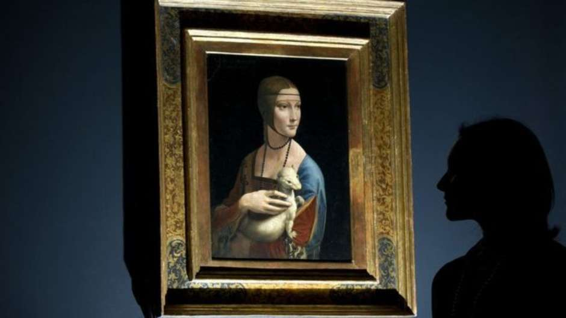

Uma barganha incomum envolvendo grandes gênios da pintura está colocando o mercado europeu de arte em polvorosa.
O governo da Polônia anunciou ter comprado uma famosa coleção privada, que inclui uma pintura rara de Leonardo da Vinci, por uma fração de seu valor de mercado estimado.
A Coleção Czartoryski foi vendida por 100 milhões de euros (cerca de R$ 341 milhões), apesar de estar avaliada em cerca de 2 bilhões de euros (quase R$ 7 bilhões).
Além da obra Dama com Arminho , de Leonardo da Vinci, a coleção ainda inclui quadros de Rembrandt e Renoir. Adam Karol Czartoryski, descendente da princesa Izabela Czartoryska, que fundou a coleção ainda em 1802, disse que a venda foi na verdade uma "doação" ao povo polonês.
"Tive vontade de fazer uma doação, esta foi minha escolha", explicou. Ele acrescentou que está seguindo o exemplo de seus ancestrais que "sempre trabalharam para a nação polonesa".
Mas a transação levou toda a diretoria da fundação familiar que ele preside a renunciar em protesto. O conselho administrativo da Fundação Czartoryski alegou que não foi consultado sobre o negócio.